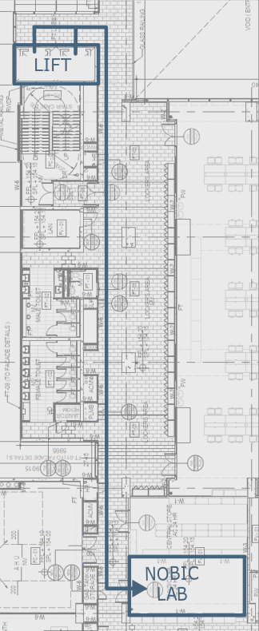

Email:
general inquiries: nobic[..]e.ntu.edu.sg ✉
imaging facilities: nobic.facilities[..]e.ntu.edu.sg ✉
director: Prof. Peter TÖRÖK ✉
GitHub:
github.com/NOBIC-NTU
Development laboratory:
LKCM, Experimental Medicine Building, #2-0207 (see the plan)
59 Nanyang Drive
Singapore 636921
Map
